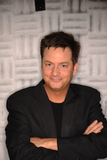

Sparse representations and applications to Music Information Retrieval
"The why, how, and what of sparse representations for audio and acoustics"
Sparse representations have become a popular tool for many tasks in audio signal processing. This talk will discuss the benefits they bring, their drawbacks, and some of the most common algorithms to solve the corresponding optimization problems. This will be illustrated by recent work aimed at structuring a mixed audio content, such as in radio archives, with different goals and criteria: finding out exact or approximate repeats, jointly coding them, identifying speech and music content, separating audio streams, etc. One of the main challenges, for a possible use on large datasets, is to maintain a reasonable computational complexity, hence requiring optimized algorithms, and new schemes will be discussed. Finally, efficient sampling schemes can be designed for sparse signals, and examples in acoustics of such so-called "compressed sensing" schemes will be given.
Prof. Laurent Daudet (Paris Diderot University - Paris 7, France)
Bio: After a physics education at the Ecole Normale Superieure in Paris, and one year as visiting scholar at CCRMA, Stanford University, Laurent Daudet received in 2000 a PhD in applied mathematics from the Université de Provence, Marseille, France, on the subject of audio modeling, under joint supervision from R. Kronland-Martinet (LMA) and B. Torrésani (LATP). In 2001-2002, he was a EU Marie Curie Post-doctoral Fellow at the Centre for Digital Music at Queen Mary University of London, UK, working with Prof. M. Sandler on high quality audio coding. Between 2002 and 2009, he was associate professor at UPMC (Paris 6 University) in the Musical Acoustics Lab. Since September 2009, he is Professor at Paris Diderot University - Paris 7, with research at the Langevin Institute for Waves and Images. Currently, is also "Junior Member" of the Institut Universitaire de France, a 5-year fellowship to foster high-quality research in academia. Laurent Daudet serves as associate editor for the IEEE Transactions on Audio, Speech, and Language Processing, and is author or coauthor of over 100 publications (journal papers or conference proceedings) on various aspects of acoustics and audio signal processing.
Webpage: http://www.institut-langevin.espci.fr/Laurent-Daudet,207
Music and emotions: psychological perspectives
"Hearing with our hearts: Psychological perspectives on music and emotions"
Music has been linked to emotions since Ancient times, but it is only in the last two decades that empirical studies on this topic have flourished in such diverse disciplines as musicology, neuroscience, sociology, and computer science. In this paper, I will attempt to show what a psychological approach has to offer to our understanding of the relationship between music and emotion. First, I will present some definitions and distinctions that can help to organize the field. Then, I will offer a review of the psychological mechanisms through which music may express and arouse emotions. This will lead to a discussion of how psychological theory can be beneficial for the Computer Music Modeling and Retrieval community, by serving to highlight the crucial distinction between sound and significance.

Prof. Patrik N. Juslin (Uppsala University, Sweden)
Bio: Patrik N. Juslin is professor of psychology at Uppsala University, Sweden, where he directs their research and teaching in music psychology. Juslin has published numerous articles in the areas of music performance, music and emotion, music education, and emotions in speech, in scientific journals such as Psychological Bulletin, Behavioral and Brain Sciences, Journal of Experimental Psychology, Emotion, and Music Perception. He edited the volumes Music and Emotion: Theory and Research (2001) and Handbook of Music and Emotion (2010) together with John Sloboda. Juslin is an associate editor of the journals Music Perception and Musicae Scientiae. He is a member of the International Society for Research on Emotions (ISRE), and received a Young Researcher Award from the European Society for the Cognitive Sciences of Music (ESCOM). Alongside his work as a researcher, he has also worked professionally as a guitar player.
Webpage: http://www.psyk.uu.se/forskning/forskargrupper/musicpsychology/
Music and emotions: composition perspectives
"Music in cinema: how soundtrack composers act on the way people feel"
Simon Boswell
Bio: Simon Boswell is a BAFTA nominated British film score composer, conductor, producer and musician, with more than 90 credits to his name. Boswell studied English Literature at Pembroke College, Cambridge. He formed the band "Advertising" in 1977 which toured extensively with Blondie at the beginning of punk rock era. Boswell's film career started in 1985, and since then he has received countless awards from around the world and has been nominated twice for a BAFTA award. The film directors he worked with include Danny Boyle, Michael Hoffman, Dario Argento, Clive Barker and Alejandro Jodorowsky. Boswell’s work covered many different genres such as Italian exploitation ("Phenomena", "Stage Fright"), contemporary thrillers ("Shallow Grave", "Hackers"), horror flicks ("Lord Of Illusions", "Hardware"), romances and character studies ("Jack and Sarah", "This Year's Love", "Born Romantic"), dramas ("In My Father's Den", "The War Zone", "My Zinc Bed"), fantasies ("Santa Sagre", "Photographing Fairies", "Tin Man") and literary classics ("A Midsummer Night's Dream", "Cousin Bette"). He has also collaborated with many high profile artists on his projects, such as Elton John, Dolly Parton and Marianne Faithful. Established as a live performer as well as working in recording studio, he is accomplished with electronic and rock genres, combining these with epic orchestral scores. Boswell has worked with musicians from bands such as Blur, Orbital, The Sex Pistols and Echo And The Bunnymen.
Webpages: http://www.simonboswell.com/